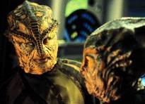
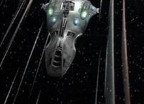
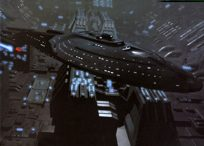
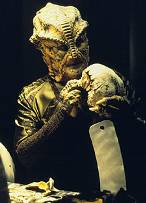
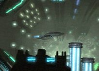
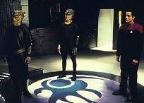
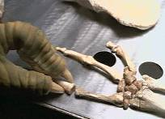

|
MANCHETE
DO EPISDIO
Dinossauros invadem o quadrante
Delta e tomam o controle da Voyager
Episdio
anterior | Prximo
episdio
Sinopse:
Data estelar: desconhecida.
 O professor Gegen e seu assistente Veer encontram os restos de um
oficial da Frota em uma caverna de um mundo aliengena. Gegen
acredita que o achado a chave para descobrir as verdadeiras
origens de sua raa, os Voth, uma espcie rptil que, segundo
ele, vem de uma parte longnqua da galxia. A teoria da
"Origem Distante" contradiz a doutrina da ministro Odala e
dos poderosos ancios Voth, os quais acreditam que sua raa foi a
primeira a evoluir a seres inteligentes no quadrante. Os ancios so
muito avessos s afirmaes, mas Gegen encontra uma pista
consistente no uniforme do cadver: o nome de uma nave chamada
"Voyager".
 Gegen e Veer trilham o caminho da Voyager pelo quadrante Delta at
finalmente encontrarem a prpria nave. Graas sua sofisticada
tecnologia de camuflagem, eles se transportam a bordo e observam a
tripulao sem serem detectados. Mas os sensores internos acabam
localizando-os e, assustado, Veer dispara um tranqilizante contra
Chakotay. O Voth incapacitado por um tiro de phaser, porm Gegen
se transporta de volta sua nave, levando consigo o inconsciente
Chakotay.
 Na Enfermaria, Veer tenta se proteger entrando em um estado de
hibernao. Examinando a sua estrutura gentica, o Doutor
descobre que ele evoluiu dos dinossauros da Terra. Na nave Voth,
depois que Chakotay recupera a conscincia, ele e Gegen chegam a
concluses parecidas, apontando que os ancestrais dos Voth
sobreviveram extino, desenvolveram tecnologia de viagens
espaciais e deixaram o planeta. Acusado de heresia pelos ancios,
Gegen traa um curso para mostrar sua evidncia mais palpvel -
Chakotay - queles que o apiam. Mas antes que chegue a seu
destino, recebe notcia de que a Voyager foi capturada pela
nave-cidade dos Voth.
 A tripulao mantida presa pelo Ministrio dos Ancios, que
promete destruir a nave da Federao a no ser que Gegen retorne
para enfrent-lo. Odala o acusa de ser uma influncia destrutiva
para a sociedade Voth e o ordena a retirar suas afirmaes.
Contudo, o cientista se recusa a faz-lo, at o ponto em que a
ministro o ameaa dizendo que mandar a tripulao para uma colnia
de deteno. Para salv-los, Gegen desmente publicamente sua
teoria, sabendo que a herana verdadeira de seu povo permanecer
um segredo... por enquanto. A tripulao mantida presa pelo Ministrio dos Ancios, que
promete destruir a nave da Federao a no ser que Gegen retorne
para enfrent-lo. Odala o acusa de ser uma influncia destrutiva
para a sociedade Voth e o ordena a retirar suas afirmaes.
Contudo, o cientista se recusa a faz-lo, at o ponto em que a
ministro o ameaa dizendo que mandar a tripulao para uma colnia
de deteno. Para salv-los, Gegen desmente publicamente sua
teoria, sabendo que a herana verdadeira de seu povo permanecer
um segredo... por enquanto.
Comentrios:
A princpio, o roteiro de "Distant
Origin" parece se basear em mais uma premissa
sem-p-nem-cabea dos roteiristas, certo? Desculpe desapont-lo,
mas esta s a impresso inicial. possvel que at os mais
cticos tenham mudado de opinio quando assistiram ao episdio.
Apesar de improvvel, a histria coerente, interessante e rica,
seguindo a mesma tendncia do segmento anterior, "Real
Life", o que a torna uma agradvel surpresa.

claro, tratar desse assunto inevitavelmente causaria protestos no
fandom. Mas, mais do que a forada tentativa de explicar a
sobrevivncia dos dinossauros ou a sua existncia no sculo 24,
a sua presena no quadrante Delta e, mais convenientemente, o
encontro com a USS Voyager que tornam o roteiro implausvel. Os
roteiristas insistem em trazer para a srie elementos do quadrante
Alfa, o que tira toda a unicidade e dramaticidade da premissa
original. O telespectador simplesmente no engole a idia de que a
nave est isolada nos confins da galxia, por dois motivos
bsicos: primeiro; a tripulao no se comporta como se fosse o
nico grupo de humanos num raio de 70.000 anos-luz; segundo; a
produo no foi capaz de ilustrar um quadrante Delta vasto e
inexplorado. s ir at o prximo sistema para encontrar alguma
raa conhecida. Basta lembrar de "The
37's", em que um grupo de humanos do sculo 20 foi
abduzido e transportado ao quadrante Delta por aliengenas hostis,
de "Tattoo", onde
conhecemos os ancestrais de Chakotay, ou at mesmo de "False
Profits" e "Unity",
em que vemos, respectivamente, Ferengis e humanos assimilados pelos
Borgs em Wolf 359.
Portanto, o episdio peca por
deslocar os dinossauros algumas dezenas de milhares de anos-luz e
por permitir que a tripulao os encontre do enorme quadrante, e
no pelas improbabilidades j mencionadas.
 Desligando-se
disso, o roteiro excelente. Braga e Menosky conseguem fazer com
que a histria seja digervel. A premissa "dinossauros"
deixa de ser importante assim que se tem uma amostra de como a
estrutura social dos Voth. Apesar de tecnologicamente avanada, a
raa vive uma realidade semelhante ao perodo medieval europeu, em
que a doutrina era imposta pelo poder papal e no podia ser
desafiada por novas possibilidades de interpretao. No caso, o
poder em questo seria o do ministrio.
 Histrias
que retratam experincias ocorridas na realidade geralmente
originam episdios de boa qualidade. No poderia ser de outra
forma, afinal o que o pblico est vendo um retrato do que de
fato aconteceu na Terra. Vale lembrar algumas obras-primas de Deep
Space Nine, como o caso de "Duet", da
primeira temporada, uma clara aluso ao holocausto promovido pelos
nazistas, e "The Collaborator", episdio do
segundo ano dentro do mesmo assunto.
Tm mrito tambm os mtodos de
investigao de Gegen. Ele sim um cientista. Por mais que os
produtores tentem vender essa imagem, a tripulao da Voyager no
composta por cientistas.
As
descobertas de Gegen abrem espao para bons traos de continuidade
na srie. Os ossos que ele encontra no incio da histria so os
restos do alferes Hogan, morto em "Basics,
Part II". A Expanso Nekrit citada e pode-se ver
at mesmo a estao espacial de "Fair
Trade", onde Neelix se envolveu em atos
ilcitos.
Mas
o episdio tambm sensacional por mostrar a nave sob a
perspectiva de uma raa aliengena. At a metade da histria,
as aes da tripulao so vistas em terceira pessoa.
Igualmente interessantes so as dedues preliminares de Gegen e
de seu aprendiz quanto aos aspectos antropolgicos da sociedade
humana (obviamente, a primeira idia a de que os humanos so
uma sociedade matriarcal), os comentrios sobre as interaes
entre Tom e B'Elanna e o mtodo de observao.
O episdio termina muito bem,
deixando a questo em aberto e, inclusive, permitindo uma eventual
continuao - mas no se anime, ela no vir. As teorias de Gegen
so postas a julgamento e ele forado a abandonar o meio
cientfico, no qual brilhantemente atuara durante anos. A crtica
do progresso versus tradio fica clara.
 Contudo,
na nsia de mostrar os dinos, os roteiristas novamente ignoraram o
ponto crucial da srie. Em momento algum falou-se em "voltar
para casa". Por que levantar essa questo agora? Simplesmente
porque os Voth fizeram a mesma viagem que a Voyager est fazendo
(no sentido oposto, claro), so uma raa altamente evoluda,
experiente, e eles tm tecnologia de transdobra. Por que a capit
no tentou negociar, nem cogitou a possibilidade? Nunca saberemos.
Mas foi uma pisada feia na bola. Quando oportunidades como esta so
desperdiadas, Voyager volta a parecer a srie sem
identidade tentando copiar A Nova Gerao. Tambm no h
como saber por que a ministra Odala permitiu que a nave continuasse
em sua jornada. Qualquer um em sua posio teria destrudo toda e
qualquer evidncia que ameaasse os dogmas que regem a sociedade.
Mas, nesse caso, os fs no teriam mais uma srie, no?
Citaes:
Veer - "Curious. I didn't
expect the smell..."
("Curioso. Eu no esperava o cheiro...")
Gegen - "Male and female
interacting. Let's observe."
("Macho e fmea interagindo. Vamos observar.")
Chakotay - "Do you always
harpoon the local wildlife?"
("Vocs sempre arpoam a vida selvagem local?")
Doutor - "That creature
napping in Sickbay... is a dinosaur."
("Aquela criatura cochilando na Enfermaria... um
dinossauro.")
Paris - "Tuvok, I hope that's your stomach."
("Tuvok, espero que isso seja o seu estmago.")
Voth - "Who's that?"
("Quem ele?")
Janeway - "My helmsman. Sounds like he's about to blast a whole
inside of your ship. Lieutenant Paris, fire!"
("Meu piloto. Parece que ele est para abrir um buraco
dentro da sua nave. Tenente Paris, fogo!")
Trivia:
 Henry Woronicz interpretou JDan em The Drumhead, do
quarto ano de A Nova Gerao, e voltou a aparecer em Voyager
como Quarren, no episdio Living Witness, do quarto
ano.
Henry Woronicz interpretou JDan em The Drumhead, do
quarto ano de A Nova Gerao, e voltou a aparecer em Voyager
como Quarren, no episdio Living Witness, do quarto
ano.
Christopher Liam Moore volta a aparecer em Voyager como um
membro dos Varros, no episdio The Disease, da quinta
temporada.
Marshall Teague j teve outras experincias na fico cientfica.
Interpretou trs personagens diferentes em "Babylon 5" e
atuou em "Crusade", "Sliders" e "Stargate
SG-1".
Joe Menosky e Brannon Braga disseram que usaram o julgamento de
Galileo Galilei pela Igreja Catlica como inspirao para este
episdio. Para Menosky, o segmento ainda teve um gosto de A Nova
Gerao. O produtor Michael Piller disse que "Distant
Origin" apresentava o melhor roteiro de Voyager que
ele j havia lido at ento.
A cidade Voth criada para este episdio uma das maiores j
feitas para um episdio de TV das srie de Jornada.
Neste episdio dito que h 148 formas de vida a bordo da USS
Voyager.
So 14 minutos de episdio at que possamos ver algum da
tripulao de Voyager. Um recorde!
Ficha
tcnica:
Escrito por Brannon Braga
& Joe Menosky
Direo de David Livingston
Exibido em 30/04/1997
Produo: 065
Elenco:
Kate Mulgrew como
Kathryn Janeway
Robert Beltran como Chakotay
Roxann Biggs-Dawson como B'Elanna Torres
Robert Duncan McNeill como Tom Paris
Jennifer Lien como Kes
Ethan Phillips como Neelix
Robert Picardo como Doutor
Tim Russ como Tuvok
Garrett Wang como Harry Kim
Elenco convidado:
Henry Woronicz como Gegen
Christopher Liam Moore como Veer
Marshall Teague como Hulak
Concetta Tomei como Odala
Episdio
anterior | Prximo
episdio
|